New Horizon: Empowering Asian Immigrants in US Job Search
Making job searching experience easier for Asian immigrants new to the United States
- Timeframe - September 2022 - December 2022
- Role - UX ResearcherUX Designer
- Type - Solo ProjectMobile Design
Project Overview
Job searching app is a platform designed for preparing Asian Immigrants moving to the US to find a job. The platform captures individuals’ unique needs and generates listed matching jobs and easily connects employers with matched job seekers.
Problem Statement
The language barrier, educational background, and unmatched skill sets in a different country make it hard for Asian immigrants to find a job in the US for a living resulting in a high unemployment rate. It makes this group of people even harder to find suitable jobs during the pandemic.
Challenges
- Discover pain points of the current job searching app for Asian immigrants and propose solutions to achieve their needs
- Understand user’s characteristics and needs regarding finding jobs in the US
- Accessible for users to use the platform and easily get the app
Design Process
I applied the design thinking approach when solving this problem. To practice design thinking, I followed the below process:
Discover Phase
Quantitative Research
For the research part, I created the user survey and distributed the survey to groups with different backgrounds and characteristics in order to determine target users and understand their basic needs. About 30 responses were collected and below are the key insights extracted from the survey:
- The survey confirmed that some Asian immigrants face language barrier issues and are not sure how to find a job in the US.
- Most people learned the job from neighbors and relatives.
- People struggle to connect with people who are in a similar situation and require a platform to collaborate.
- Current job search engines are powerful but not user-friendly for users new to the environment and lack supporting documents.
Competitive Analysis
I conducted a competition study that included both direct and indirect competitors in order to establish a strong foundation and have a thorough grasp of how our competitors are performing in the market.
💭While doing the competitive analysis, I found that there is no platform that combines the function of helping users prepare for finding a job the same time searching for the desired job.
After doing the competitive analysis, I listed the problems found in current design solutions:
- No job searching function in languages other than English
- Limited support before immigrants start looking for a job such as English course learning, resume building, information about the US labor market
- Immigrants have to reach several web pages to access information such as finding a job and connecting with the community can not be done within one website
- For people who are not tech-savvy, they are hard to get started and access all the resources
- No guarantee that the job posted is regular recruitment which cannot be easily trusted.
Define Phase
Created personas and user story map to understand more about the user's problems.
User Persona 1
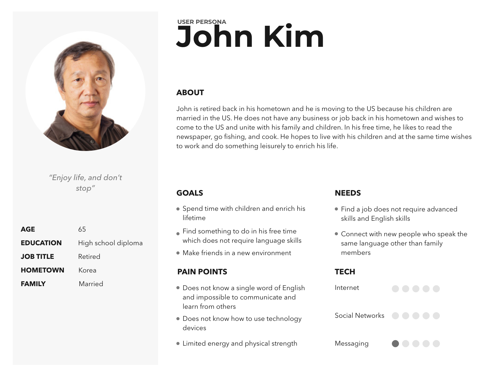User Persona 2
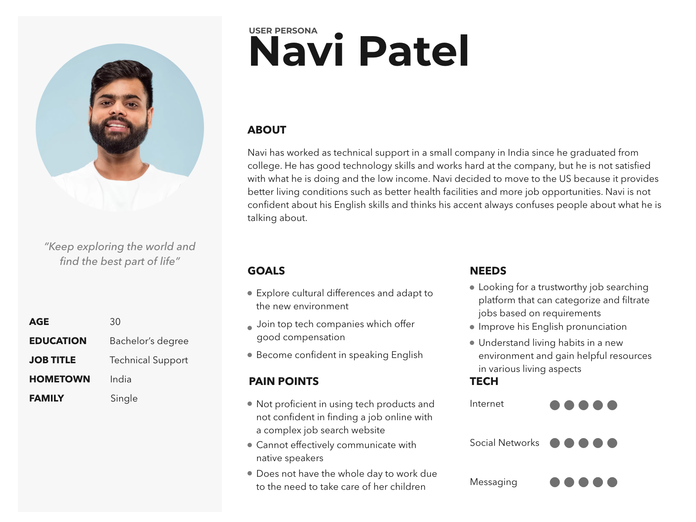User Persona 3
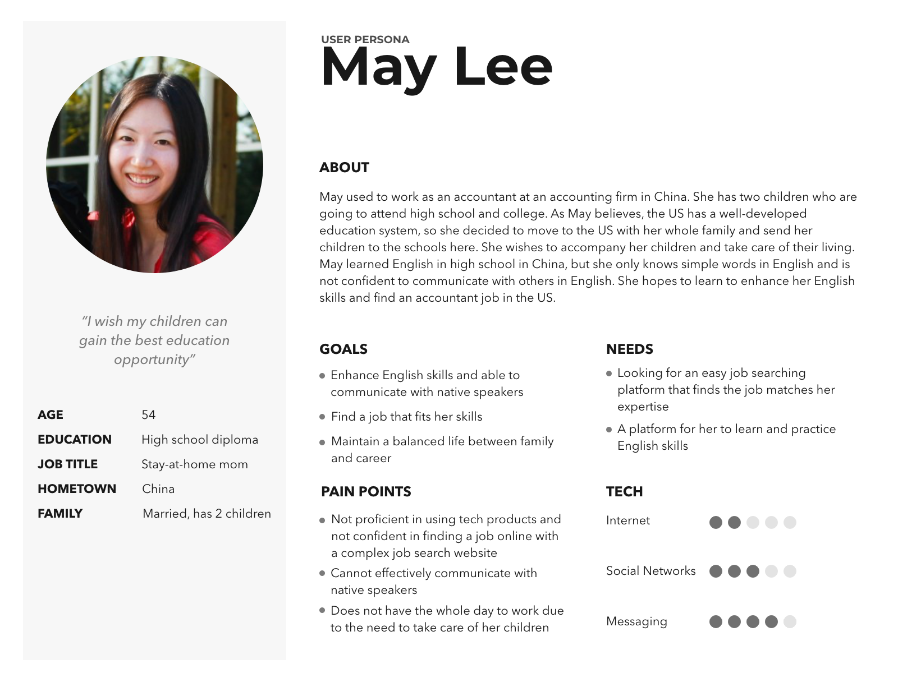“Anti” User Persona (not service target user)
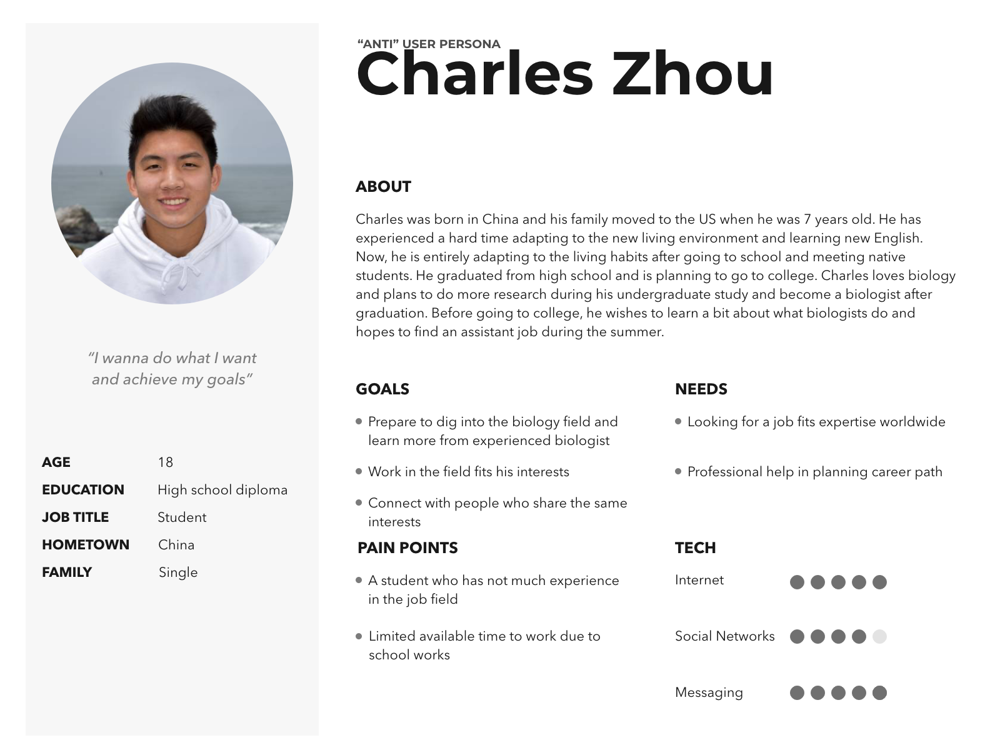Ideation Phase
Based on the user needs, I decided to include the following functions in the platform:
- Matched job list
- Learn preparation skill courses
- Community resources
- Community center
Design Phase
I followed the below steps in the design phase:
- Paper Sketches & QOC
- Low-fidelity wireframes
- Final Design
Paper Sketching & QOC
Entering the design phase, I kept in mind everything I had collected so far - personas, their pain points, and the new flows. I started visualizing stuff by roughly sketching out concepts and making design rationales by creating QOC.
I was able to obtain some heuristic feedback from my peers before starting high-fidelity design.
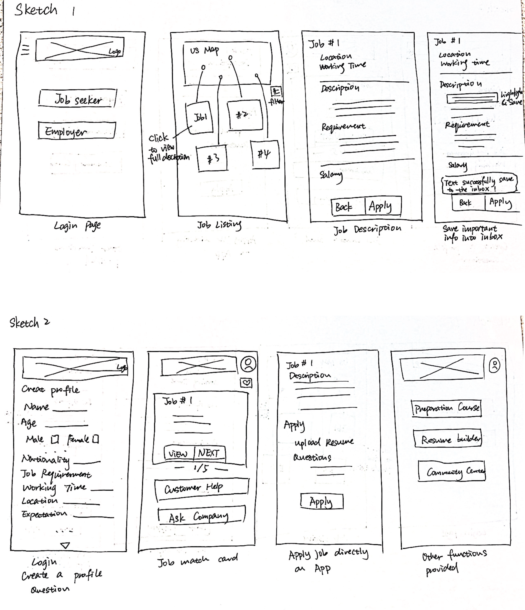 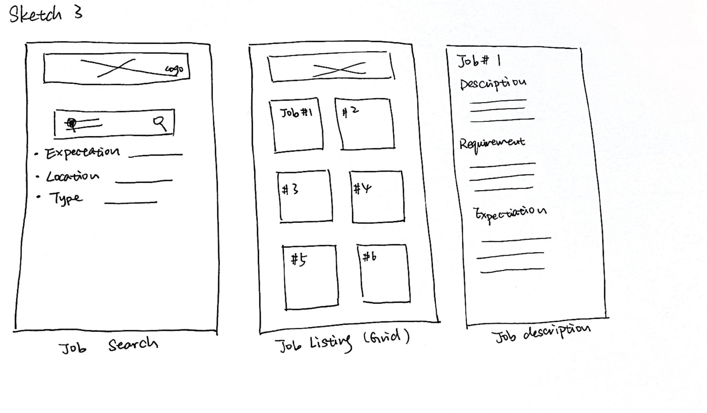QOC
I applied the QOC method to select and design the best methods for the user interacting with the app.
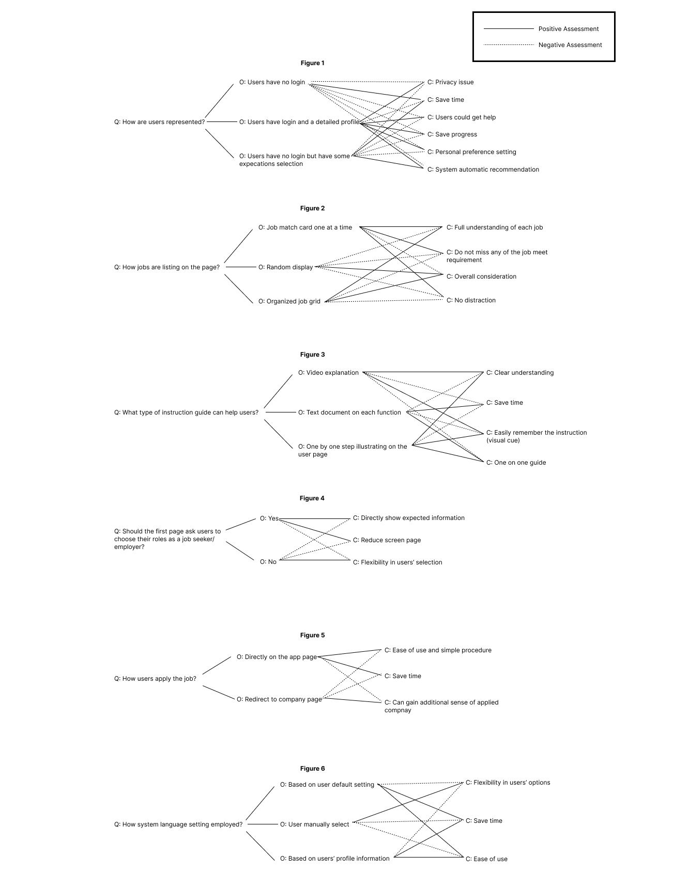High-Fidelity Design
In this phase, my emphasis was put on visual consistency and how my interface and interaction could serve the core functionalities.
The main flow of the app for the users is to learn how to use the app based on the instructions, successfully sign up, complete the user questions, search for jobs, and finally apply for the job on the app. I will explain the major feature the app provides below:
Instruction page
By opening the app, the first thing that appears for a first-time user is the app instruction of the function the app provides. Users can either log in or sign up as first-time users. On the signup page, users should indicate whether they are job seekers or employees because these two groups would access a different page while using the app.
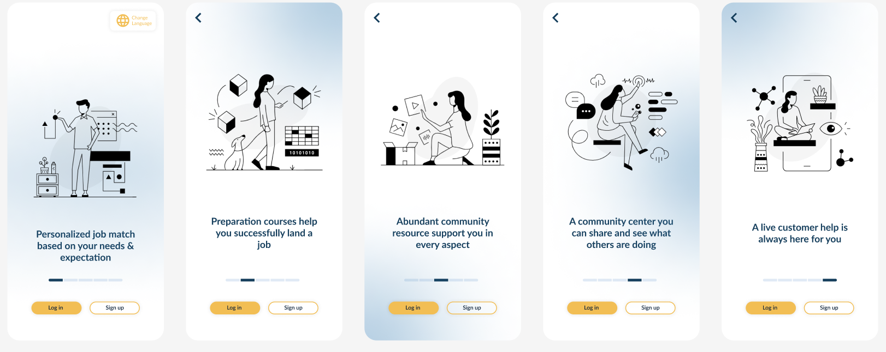 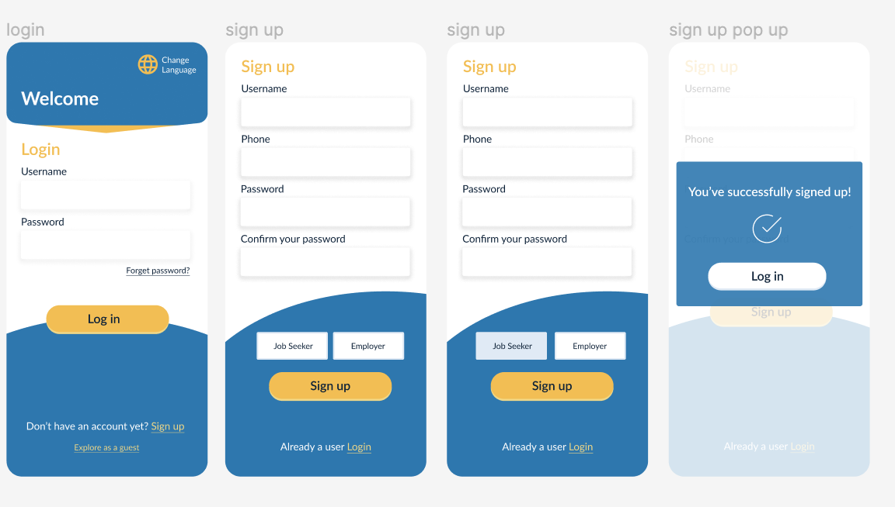Profile creation
If the user is the first time using the app, they are required to complete a list of questions for the system to understand what type of job they are looking for and learn about their preference when matching them with the most suitable job in the job database.
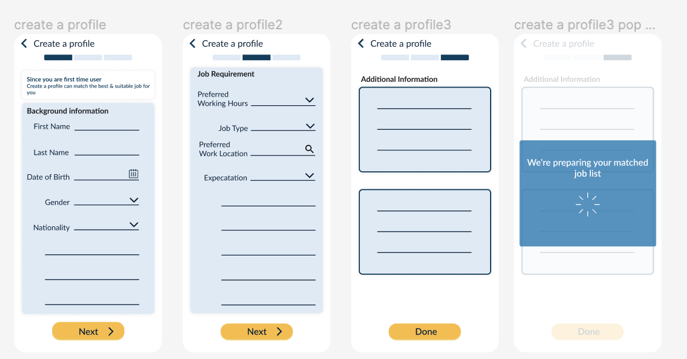Matched job list
When people are presented with the matched job list, they are able to view all the matches or see the full detailed description of each job. If there are requirements that the users don’t meet at that moment, they could register for the preparation courses provided by the app. Users could save the job for later application or directly apply for the job with simple steps such as uploading the resume and answering a list of questions.
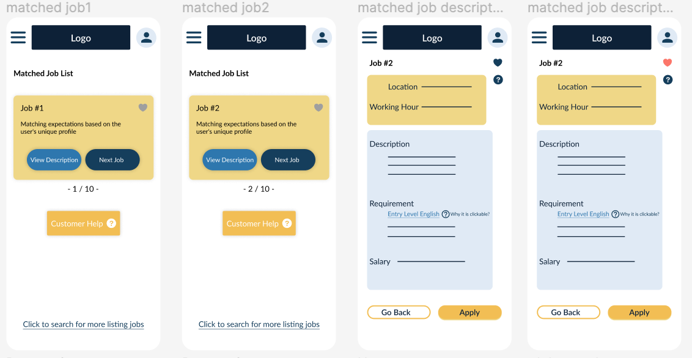Job application
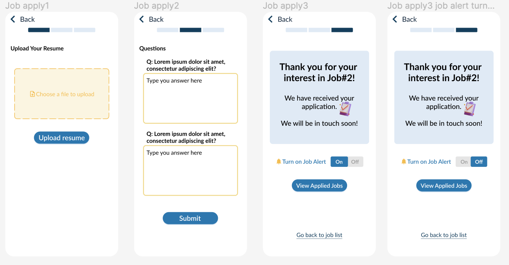Preparation Courses
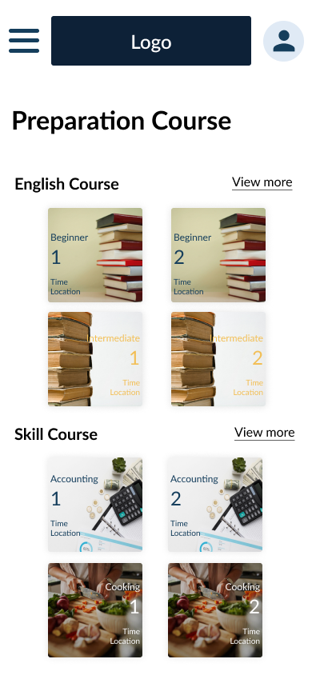Community Center
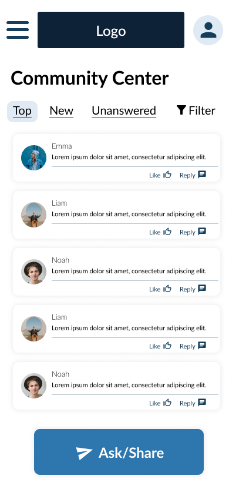Help Center
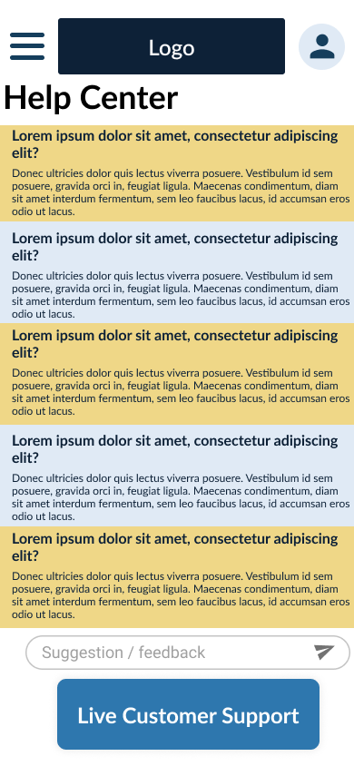Final Digital Prototype Walkthrough
Impact
As a job-searching app designed for Asian immigrants in the United States, the app supports these groups to find suitable jobs in the US. The major societal impact is to decrease the unemployment rate. Because of the cultural difference and the recent pandemic influence, people are left unemployed not only because of the few job opportunities but also because they could not easily find a job due to a lack of knowledge of finding a job in a different country. A platform that understands their needs and follows their requirements could influence the employment rate so that more Asian immigrants could find a job that is best suitable for them.
Another impact is on human life support and livelihood. When people move to a new country, it means most of the relationships and support back in their home country are being cut. It’s pretty difficult to find help in a new country to support every aspect of their life. With the app feature of the community resource guide and community center, it connects people to a larger group of people who experience the same situation. The app greatly enhances immigrants’ lifestyles and promotes them to connect with other people.
Lessons learned
Iteration based on user tests helped me to empathize with users and improve detailed parts that could lead to a better user experience. When facing time constraints for the project, it’s better to build the essential component at first and adjust the “nice to have” feature later.